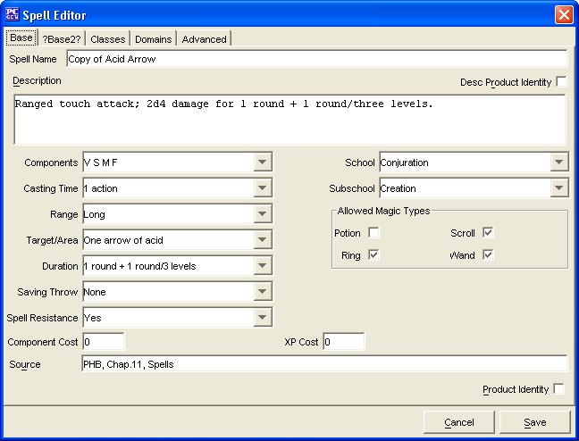

The Base Tab has everything required to make a simple Spell. The remaining tabs are for more advanced Spell creation. The Spells created will be saved into the data/custom directory under the name of customSpells.lst.
The Spell Name is where you will enter the name for your Spell.
The Desc Product Identity checkbox is to denote if the Spell's name being created is the Product Identity of a publisher
The Description window is where you will type in a description of the Spell powers (i.e. "+1 attack, +1 on saves against fear, 1d8 temporary hit points.")
The Components options determines the combination of components necessary to cast this spells (Verbal, Somatic, etc)
The School determines what magic school the spell belongs to and is used for specialist wizards to determine their favored schools bonus spells.
The Casting Time determines the time it takes to cast this spell.
The Subschool determines what sub-school the spell belongs to and is used for specialist wizards to determine their favored schools bonus spells.
The Range determines the range that the spell has.
The Target Area determines the Target, Area, or Effects that the spell has.
The Duration determines how long the spell lasts.
The Saving Throw determines if there is a save and if so what type.
The Spell Resistance determines whether the target can try to resist the spell based on their Spell Resistance number and if so the effect of the resistance.
The Component Cost determines the cost of the spells components.
The XP Cost determines how much the spell costs to cast, used for determining potion, wand, etc costs.
The Allowed Magic Types determines what types of items this spell can be used to make.
The Duration determines how long the spell lasts.
The Source field is a text window for listing what source material the Spell is from. If it is a custom created Spell, then you can leave this blank or simply put in "custom"
The Product Identity checkbox is to denote if the Spell's name being created is the Product Identity of a publisher
The Cancel and Save buttons, which appear on every tab, are used to either cancel the Spell creation or save it to the customSpells.lst file.